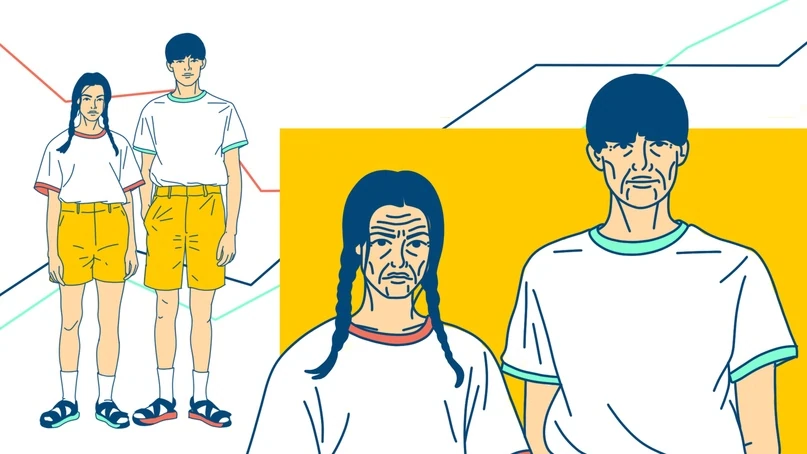

Данила Блюз разбирается в повальном увлечении приложением FaceApp. Для чего оно нужно Прохору Шаляпину и отечественным спецслужбам, а также зачем оно нам самим
Мода на приложение FaceApp стремительно состарила ленту новостей. Лица некогда юных друзей скукожились, как изюмины, покрылись старческими пятнами, поседели и обросли бородами. Последний раз такое засилие стариков я видел на садоводческой ярмарке. Соцсети превратились в шведский стол для геронтофилов. Наверное, заказ поступил от трех главных любителей старины в России: Максима Галкина, Прохора Шаляпина и Гогена Солнцева — присматривают себе невест на будущее.

Правда, девочки не особо оценили приложение. Оно и понятно, женский пол всю жизнь борется со временем, шпаклюет все эти микротрещинки на лице, замазывает их штукатуркой и белилами, а тут тебе предлагают за секунду разрушить все, что «нажито непосильным трудом» и явиться миру гадкой сморщенной старухой. Красотка из шоу «Уральские пельмени» справедливо возмутилась повальной моде на старость: «Что это за новая волна «состаривать» свои фото? Рвение увидеть себя через 40, 50, 60 лет? Это весело, но мне почему-то не хочется смотреть на себя с глубокими морщинами» — и в пику всем приложила снимок себя красивой, отполированной и гладенькой, как фарфоровая кукла.
Но FaceApp продолжил свое победное шествие по соцсетям, и вот уже селфи пользователей старятся по всему земному шару. Даже знаменитости не брезгуют участием в этом флешмобе. Гордон Рамзи, Кевин Харт, Джаред Лето, Лудакрис, Lil Nas и уйма прочих звезд напоминают миру о неизбежных очередях в собес и сумках с колесиками, из которых торчит ботва помидорной рассады. Только за первые 10 дней FaceApp заработал на встроенных покупках более миллиона долларов.
Забыл сказать главное! FaceApp — разработка российской компании Wireless Lab, а, как известно, в США по-прежнему продолжают бояться russian hackers, которые запросто могут подтасовать выборы в мировой столице демократии. Само собой, нашелся в сенате США параноик, который сложил в уме два и два и сделал вывод, что FaceApp — разработка российских спецслужб для похищения данных американских пользователей. Чак Шумер (так зовут параноика) не поленился и прочитал пользовательское соглашение, в котором написано: «Вы предоставляете FaceApp бессрочную, безотзывную, неисключительную, бесплатную, всемирную, полностью оплачиваемую, подлежащую передаче сублицензируемую лицензию на использование, воспроизведение, изменение, адаптацию, публикацию, перевод, создание производных произведений, распространение, публичное исполнение и показ вашего пользовательского контента и любого имени, имени пользователя или подобного, предоставленного вместе с вашим пользовательским контентом во всех форматах и каналах мультимедиа, которые в настоящее время известны или разрабатываются, без компенсации вам».
По мнению Шумера, фото миллионов наивных американцев могут оказаться в лапах враждебной державы. Зачем? А кто ж их знает! Может быть, враги планируют создать в секретных тоннелях под Америкой мир, населенный злыми доппельгангерами, как в фильме «Мы», для того чтобы однажды ночью выпустить их всех из заточения и подменить двойниками реальных американцев? А может, получив доступ к фотогалереям всех власть имущих, они начнут шантажировать их компрометирующими членофотками? Представьте, как в один миг величие Америки рушится, когда перед всей мировой общественностью предстает рыжий микропенис Дональда Трампа! Скандал! Народ возмущен, избиратели Трампа заламывают руки от горя: «Как с таким микроскопическим пенисом он собрался делать Америку великой?!» Поднимается бунт, Трампа без штанов вешают на воротах Белого дома, страна погружается во мрак межрасовых и межгендерных войн.
Как бы то ни было, если это проект наших спецслужб, то большой им респект. Но чем, кроме хитрости нашей разведки, объяснить популярность всеобщего старения? Ведь в приложении можно посмотреть на себя в виде младенца, прилепить себе другую прическу, бороду, а то и вовсе поменять пол. Но все выбрали массово стареть.
Я не раз уже писал о повальном инфантилизме и культе молодости в современном обществе. Да вы и без меня это все знаете. Все хотят быть вечно молодыми, вечно пьяными, старость изображается убогой и никчемной.
Это в прежние времена старики являлись кладезью мудрости, потому что дожить до старости тогда было действительно нелегко, и если человек еще не помер в 50 лет, значит, он что-то да знает о выживании. Сейчас же старики стали посмешищами, не понимающими, что творится вокруг. Они теперь как растерянные сморщенные младенцы.
Поэтому люди с ужасом ждут старости, отгоняют ее, обкалываются ботоксом или просто молодятся, гонясь за новыми трендами и как бы говоря этим: «Я слушаю Фейса, я в теме, я не старпер», хотя сами втихаря слушают «Любэ» или «Сектор Газа», а от всех этих фрешменов у них мигрень и тошнота.
Так вот, FaceApp позволяет нам избавиться от страха перед старостью. Вот мы загрузили фото в приложение и на нас там смотрит вроде бы как старичок, но бодренький: он улыбается, он не впал в деменцию, зубы на месте, он в футболке с принтом модной группы и в клевых кроссовках. И вроде бы состариться уже не так и страшно.
И хочется показать себя людям: гляньте-ка, я не буду развалиной, от которой воняет валерьянкой и мочой, я буду также крутить кикфлипы на скейте и слэмиться у сцены на громких концертах.
Конечно, все понимают, что приложение не учитывает множества факторов и событий, которые могут произойти с вами в жизни. Не берет в расчет, что вы будете бухать, например, или курить, а это исказит вашу рожу гораздо сильнее, чем нейросеть. Или у вас откажет щитовидка и вы разжиреете, как боров, или, наоборот, у вас заведется в кишках прожорливый трехметровый глист и вы будете тощим, как узник Освенцима. Может, вся ваша семья заживо сгорит и озорной блеск в глазах угаснет, потому что вы на всю жизнь впадете в депрессию. Да что там! Может, вы и вовсе не доживете до вожделенного полтинника и так и останетесь в нашей памяти лопоухим балбесом! Все может быть.
Но об этом думать не хочется, хочется стать приятным задорным стариком, каким нас видит FaceApp. На самом деле мы не старим себя с помощью этого приложения, а омолаживаем те развалины, какими будем на самом деле. Посмотрели, подумали — и можно дальше скакать-веселиться, как та стрекоза.